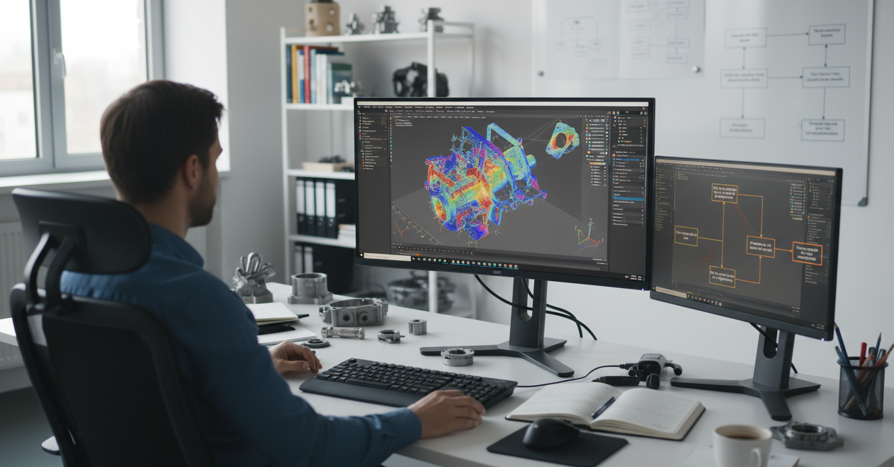
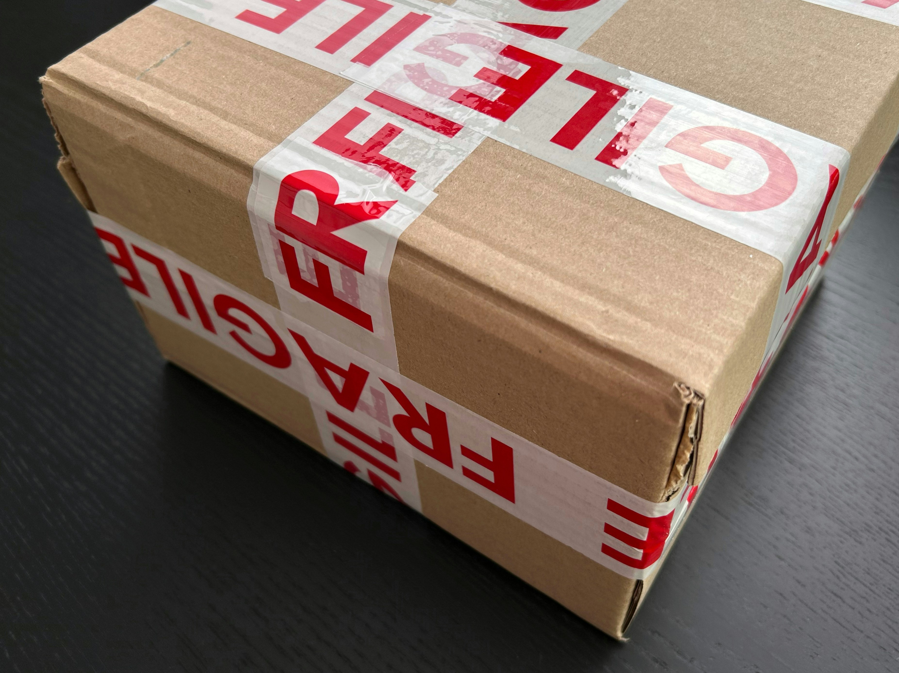

Il nostro processo di produzione ad alta precisione
Dai progetti d’epoca alla precisione moderna - scopri come ridiamo vita ai ricambi automobilistici classici
01

Consulenza con il nostro team di progettazione
Il nostro team di esperti esegue una scansione tridimensionale completa dei componenti tramite visite tecniche in loco o consegna del pezzo presso la nostra sede dove viene analizzato e documentato in dettaglio
- Tecnologia di scansione 3D
- Analisi della composizione dei materiali
- Ricerca storica
02

Progettazione CAD di precisione
I nostri ingegneri creano repliche digitali fedeli utilizzando software CAD avanzati, ottimizzando i modelli digitali per la produzione moderna mantenendo le specifiche originali.
- Progettazione assistita da computer
- Simulazione delle sollecitazioni
- Verifica dell'accuratezza dimensionale
03

Produzione additiva di alta precisione
Utilizzando la più moderna tecnologia di stampa 3D, realizziamo componenti estremamente accurati, utilizzando materiali che eguagliano o superano le specifiche originali.
- Stampanti 3D industriali
- Selezione di materiali premium
- Precisione strato su strato
04

Controllo qualità e finitura
Ogni componente è sottoposto a rigorosi controlli di qualità e processi di finitura accurati per garantire che soddisfi i nostri standard e le tue aspettative.
- Ispezione multipunto
- Finitura superficiale
- Test di prestazione
05

Imballaggio sicuro e consegna
I tuoi ricambi vintage prodotti con precisione vengono accuratamente imballati e consegnati con documentazione dettagliata e guida all'installazione.
- Imballaggio protettivo
- Istruzioni per l'installazione
- Certificazione di qualità